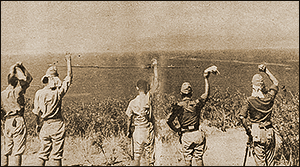

|
j
a v a s c r i p t |
May 17, 1942, Sunday

Japanese in Corregidor Wave at
Ships Steaming into Manila Bay About 7 Japanese merchant ships are now in Manila Bay, mostly 2 to 3,000 tons. A three-funnel cruiser, its accompanying destroyers and a loaded Italian liner used as a Japanese Red Cross ship have left. The blackout has been entirely lifted. The street lamps go out sometime after midnight. For tomorrow's parade, the papers teach us — with illustrations to boot — how to pay respects to high officials while holding a Japanese flag; how to shout Banzai; the correct position for holding the flag when marching, during their flag ceremonies, or when their National anthem is being played. |
|
|
|
|